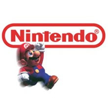
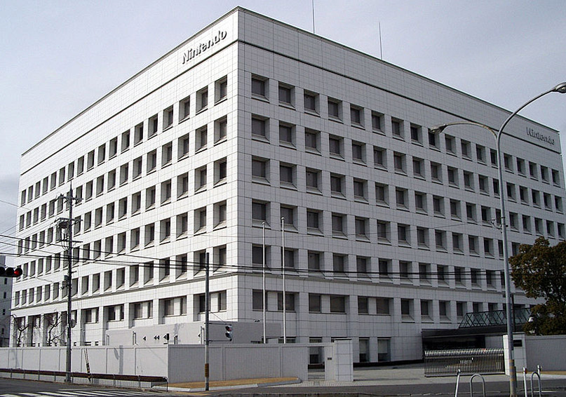
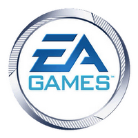
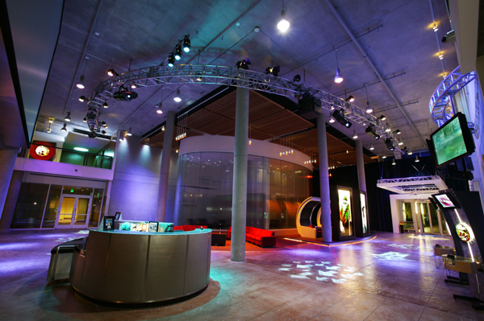
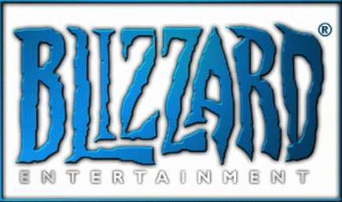
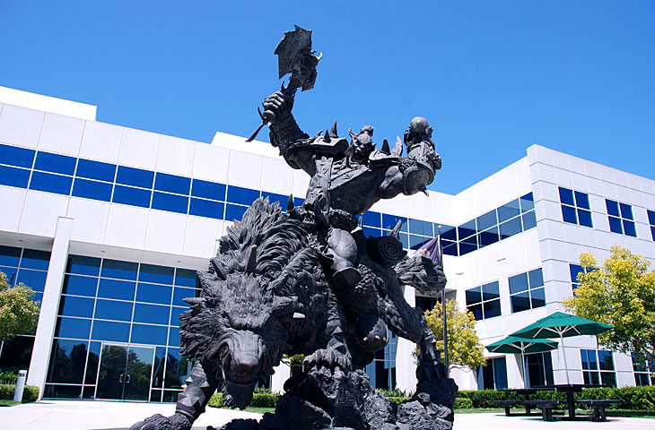

Maiores Empresas de Games(){
Capa
Por: Guilherme Castilho Casassanta
Nintendo Entertainment System
A gigante empresa Nintendo Entertainment System, fundada em 1985 foi considerada a revitalizadora da indústria de games.

No inicio a empresa contava apenas com o Game Boy, lançado em 1989 com o clássico jogo Tetris, apesar da simplificidade hoje, foi considerado o video game de maior sucesso vendendo mais de 150 milhões de unidades.
Alguns anos depois a empresa começou a desenvolver outros videos games, cada vez mais sofisticados e trazendo ainda mais diversão para os usuários. Em 1991 a empresa contou com o famoso Super Nintendo, que foi outro salto da empresa para o sucesso, além disso contou com os grande jogos marcados na história dos games, Mário World, Zelda e outros.

Desde Então a empresa não parou de crescer, trazendo mais inovações ano após ano, como o Nintendo 64, Game Boy Advanced, Nintendo GameCube, Nintendo DS, o famoso Wii em 2006 com tecnologia extraordinário para a época possuindo sistema sensível a movimento, sem fio, tornando-o o video game mais vendido da época.
Atualmente em 2011, mais especificamente em março, nos Estados Unidos a Nintendo lançou o gigante Nintendo 3DS, que permite aos jogadores um ambiente 3D sem a necessidade de óculos especiais.
EA Games - Eletronic Arts

Fundada em 1982, a empresa Eletronic Arts segue um caminho diferente das outras empresas de games como a Nintendo, Sega, Capcom, pois não produz apenas softwares específicos para seus produtos, e sim cria games para diferentes plataforma e videos games, seja para computadores, consoles, etc.
Além de produzir games, ela distribui e publica softwares no mundo todo para sistema de video games, computadores e internet.
Para termos uma idéia do tamanho da empresa, ela mesma é dividida em estúdios específicos para as áreas de entretenimento. Quando vamos jogar algum jogo da EA Games, por exemplo Fifa, temos na abertura EA Sports.
EA Sports é um dos estúdios da empresa específicos para jogos de esportes, onde são feitos os grandes jogos de futebol, basquete como NBA Elite.

Por outro lado temos também o famoso estúdio EA Play, responsável por incluir o grande estúdio The Sims Studio, no qual produziu um dos maiores sucessos da empresa, The Sims, com mais de 100 milhões de unidades vendidas desde o seu lançamento em 2000.
Além disso temos também o EA Interactive Label com desenvolvimento para mobile e a EA BioWare com foco em estratégia, MMO, jogos com histórias fantásticas, etc.
Blizzard Entertainment

Blizzard Entertainment é uma divisao da Actvision Blizzard, e hoje uma das maiores empresas no mercado de games do mundo. Inicialmente a empresa se estabeleceu em 1994 e a partir de então cresceu disparadamente com os seus jogos de alta qualidades e renomados no mundo dos games.

No iníicio a empresa era uma terceirizada no desenvolvimento de softwares para outras empresas, softwares voltados para as mais variadas plataformas, como video-games, MS-DOS, macintosh.
World of Warcraft, StarCraft, Diablo, são um dos jogos mais bem vistos e jogados do mundo, principalmente World of Warcraft, que hoje possui mais de um milhão de contas registradas. Além dos seus jogos, a empresa a cada ano realiza um dos eventos mais procurados e desejados pelos jogadores, o famoso BlizzCon, onde são anunciadas as novidades da empresa, os próximos lançamentos, previews dos jogos em desenvolvimento, como o Diablo 3 atualmente.
Referências:
Nintendo Company
IGN Nintendo Article
EA Games
Businessweek
IGN EA Games Article
Blizzard Entertainment
}